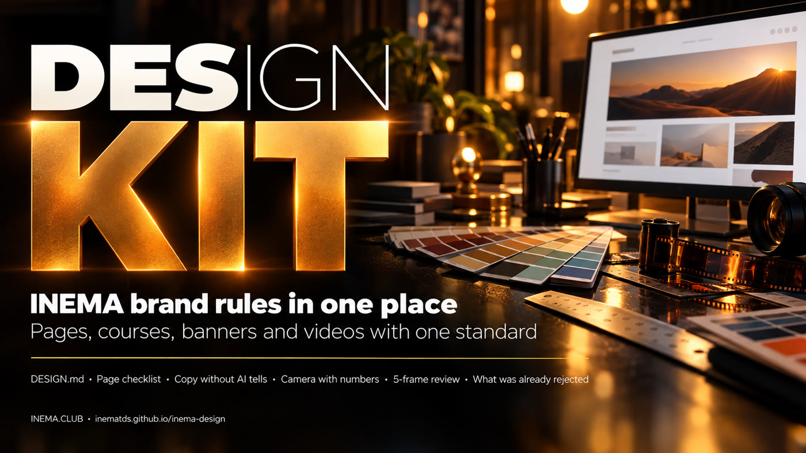

The brand rules in one place
One folder the agent reads before it makes anything. Colors, fonts, writing, camera and everything already rejected, with the source of each rule.

INEMA Design is a folder of text files with the visual rules of the INEMA ecosystem: colors, fonts, writing style, video camera and the list of what Nei has already rejected. It is for anyone who builds pages, guides, courses, banners, explicavideos, shorts and reels with agents like Claude Code and Codex. The agent reads the folder before it starts, and the piece follows the brand standard without repeating old mistakes. To use it, copy the folder and ask the agent to read its CLAUDE.md first.
A "design-os" adapted to INEMA
The method comes from the Claude Design Blueprint: a design folder the agent reads before every project. Here it is filled with rules that were already scattered across skills, lessons and notes.
🎨 One brand, several lines
DESIGN.md has a common core and one section per type of piece: dark amber guide, course v2, v5 and v6, banner, thumb and video. Each color has its source noted.
🎬 Video with a score
Standards for 16:9 and 9:16, camera words with numbers, and a 5-frame review (0, 25, 50, 75 and 100%) with a score from 0 to 10 for visual, pace and brand.
🧾 Corrections memory
Everything Nei has already rejected sits in one list. When he corrects something new, it becomes one line there and the mistake does not come back.
The agent reads, makes and checks
The reading order is in the folder's CLAUDE.md. The agent does not settle conflicts between rules: they go to DECISOES.md (open decisions) and the owner chooses.
Pages
regras/pagina-20.md (20 points before publishing) and checks/preship.py, which checks the HTML.
Writing
regras/texto.md: banned openings, words that sound like AI, years written out in speech.
Video
video/style.md, video/camera.md and video/revisao-5-quadros.md.
Very little
The files are plain text. Only the two checking steps need a tool installed.
An agent
Claude Code, Codex or any other that reads files from the folder.
git clone https://github.com/inematds/inema-designPython 3
For preship.py. Nothing to install besides Python.
python3 --versionffmpeg
To pull the 5 frames from a finished video.
ffmpeg -versionFrom clone to checked piece
The commands below are the ones in the repository.
Copy the folder
Put the folder where the agent can read it, for example in ~/projetos/inema-design.
git clone https://github.com/inematds/inema-design ~/projetos/inema-design
Ask the agent to read first
Before any visual piece, the first instruction is to read the kit. The agent says in up to six lines what it read and which rules apply.
"Read ~/projetos/inema-design/CLAUDE.md and follow the reading order. Then create the guide for project X."
Check the page before publishing
The script tests part of the 20 points (h1, main, viewport, title, description, share image, favicon, image size, labels). Check the rest by hand with the list.
python3 checks/preship.py guia/index.html # PASS/FAIL per item and the total
Review the video in 5 frames
Pull the frames, build a contact sheet and score visual, pace and brand from 0 to 10. A score below 8 goes back for fixes. If redoing it costs credits, ask first.
V=video.mp4; D=$(ffprobe -v error -show_entries format=duration -of csv=p=0 "$V") for p in 0 25 50 75 100; do t=$(python3 -c "print(min($D*$p/100, $D-0.05))") ffmpeg -v error -y -ss "$t" -i "$V" -frames:v 1 "quadro-$p.jpg" done
Log every correction
When the owner rejects something, add one dated line to memoria/correcoes.md. On the next piece the agent already reads that rule.
- 10/10 — Zoom 1.4–1.9 cutting off text: rejected. Use a dissolve, the whole image, zoom ≤ 1.25.
Tested on real pieces
Both checks were run on material that was already published.

PASS 18 html has a lang attribute PASS 18 exactly one h1 FAIL 18 main landmark present PASS 3 viewport meta present FAIL 20 og:image is set FAIL 20 theme-color is set FAIL 20 favicon link is set FAIL 16 every img has width and height 8/13 pass
What the owner chose
Reviewed one by one between Oct 10 and 12, 2026. Pages and videos already published stay as they were; the old value of each item is in HISTORICO.md.
| Topic | Decision |
|---|---|
| Brand color | Yellow #FACC15 on pages, courses and video (previously amber #E2A23B in the guide) |
| Dark background | Black #0c0c10 on every new page |
| Light background | Yellow only as a fill: button, highlighter and box; text stays dark and links are #854d0e |
| Headings | Sora; body text in Inter |
| Emoji | Only as a small icon in the guide and the v2 course; none in the v5 and v6 courses |
| Icons | Thin line stroke, Lucide style |
| Banner | Restrained lettering, warm scene; blue only in the opus style, on request |
| Thumbnail | Condensed type allowed; not in the banner |
| Reels and shorts | Image change every 1.5–3 s and Nei's voice by default |
| Zoom | Up to 1.25× on images with text; up to 1.4× on photos in reels |
| Video presets | All five stay available; the rules born from rejections apply to every one |
Three stages
The first creates the files. The others connect the kit to the tools that make the pieces.